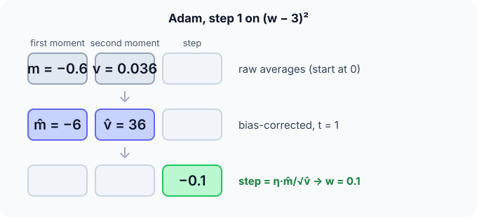

Prerequisites
The analogy
Everyday analogy
Imagine a hiker who remembers the general downhill direction of recent steps (momentum) and also how rough the ground has been (squared gradients). On rough, steep ground they take careful steps; on smooth, consistent slopes they stride confidently.
Adam adapts each weight's step in exactly this way: direction from the first average, caution from the second.
How it works
Update rule: $m \leftarrow \beta_1 m + (1 - \beta_1) g$; $v \leftarrow \beta_2 v + (1 - \beta_2) g^2$; $\hat m = m/(1 - \beta_1^t)$, $\hat v = v/(1 - \beta_2^t)$; $w \leftarrow w - \eta \, \hat m / (\sqrt{\hat v} + \varepsilon)$. Defaults: $\beta_1 = 0.9$, $\beta_2 = 0.999$, $\varepsilon = 10^{-8}$.
Start with one Adam step by hand
$f(w) = (w - 3)^2$, start $w = 0$, $m = v = 0$, $\eta = 0.1$, step $t = 1$. Predict, then open "Check".
Example: predict before you read
Step 1. Gradient, and the two moving averages $m$ and $v$.
Check
$g = -6$. $m = 0.1 \cdot (-6) = -0.6$. $v = 0.001 \cdot 36 = 0.036$.
Step 2. Cover the next line and guess: bias-corrected $\hat m$ and $\hat v$ for $t = 1$.
Check
$\hat m = -0.6 / (1 - 0.9) = -6$; $\hat v = 0.036 / (1 - 0.999) = 36$.
Step 3. The update. Predict the step and the new $w$.
Check
Step $= 0.1 \cdot (-6)/\sqrt{36} = -0.1$, so $w = 0.1$. The step equals the learning rate.

Quick recall: Before reading further, cover the text above and say out loud: what do $m$ and $v$ estimate?
Check your answer
$m$ estimates the average gradient (direction, like momentum); $v$ estimates the average squared gradient (its typical size).
Finish the picture: step 2
Now $w = 0.1$, $m = -0.6$, $v = 0.036$, $t = 2$.
- Gradient and averages. Predict $g$, $m$ and $v$.
Check
$g = 2(0.1 - 3) = -5.8$. $m = 0.9 \cdot (-0.6) + 0.1 \cdot (-5.8) = -1.12$. $v = 0.999 \cdot 0.036 + 0.001 \cdot 33.64 \approx 0.0696$.
- Corrected values and update. Predict the new $w$.
Check
$\hat m = -1.12/0.19 \approx -5.89$, $\hat v = 0.0696/0.002 \approx 34.8$; step $\approx 0.1 \cdot 5.89/5.90 \approx 0.0999$, so $w \approx 0.2$. Steps stay close to the learning rate.
Quick recall: Without scrolling up, say out loud: why does the first step have size equal to the learning rate?
Check your answer
At $t = 1$, $\hat m = g$ and $\hat v = g^2$, so $\hat m/\sqrt{\hat v} = \pm 1$ whatever the gradient's scale.
Full worked calculation
Three steps of Adam ($\eta = 0.1$, $\beta_1 = 0.9$, $\beta_2 = 0.999$) on $f(w) = (w - 3)^2$ from $w = 0$, with every moving average and every bias correction written out.
| Step $t$ | $g$ | $m$ | $v$ | $\hat m$ | $\hat v$ | Step | $w$ |
|---|---|---|---|---|---|---|---|
| 1 | −6 | −0.6 | 0.036 | −6 | 36 | +0.1 | 0.1 |
| 2 | −5.8 | −1.12 | 0.0696 | −5.895 | 34.82 | +0.0999 | 0.200 |
| 3 | −5.6 | −1.568 | 0.1009 | −5.786 | 33.67 | +0.0997 | 0.300 |
-
1Step 1: first moment (momentum part)
$$m = 0.9 \cdot 0 + 0.1 \cdot (-6) = -0.6$$$m$ is a running average of the gradient. Because it starts at 0, after one step it holds only 10% of the real gradient: it is biased towards 0.
-
2Step 1: second moment (RMSProp part)
$$v = 0.999 \cdot 0 + 0.001 \cdot (-6)^2 = 0.036$$$v$ averages the squared gradient, but with a very long memory (0.999), so it is even more biased: only 0.1% of the true value 36.
-
3Step 1: bias correction
$$\hat m = \frac{m}{1 - 0.9^1} = \frac{-0.6}{0.1} = -6, \qquad \hat v = \frac{v}{1 - 0.999^1} = \frac{0.036}{0.001} = 36$$Dividing by $1 - \beta^t$ exactly undoes the "started at zero" bias. Without it, the first step would use $m/\sqrt v = -0.6/0.19 = -3.2$ instead of $-1$: a step more than 3 times too large, at the most fragile moment of training.
-
4Step 1: the update
$$w = 0 - 0.1 \cdot \frac{\hat m}{\sqrt{\hat v} + \varepsilon} = 0 - 0.1 \cdot \frac{-6}{6} = 0.1$$$\hat m / \sqrt{\hat v}$ is the gradient divided by its own typical size: about ±1. So the step is about $\eta = 0.1$.
-
5Step 2
$$g = -5.8, \; m = 0.9(-0.6) + 0.1(-5.8) = -1.12, \; v = 0.0696 \;\Rightarrow\; \hat m = \frac{-1.12}{0.19} = -5.895, \; \hat v = \frac{0.0696}{0.001999} = 34.82$$The corrections now divide by $1 - 0.9^2 = 0.19$ and $1 - 0.999^2 = 0.001999$. Step $= 0.1 \cdot 5.895 / 5.901 = 0.0999$, so $w = 0.200$.
-
6Step 3 and the pattern
$$\hat m = -5.786, \; \hat v = 33.67 \;\Rightarrow\; \text{step} = 0.1 \cdot \frac{5.786}{5.802} = 0.0997, \quad w = 0.300$$Every step is almost exactly $\eta = 0.1$. Adam moves each weight by roughly the learning rate in the direction of its averaged gradient, which makes $\eta$ easy to choose: it is about how far a weight moves per step.
What the numbers tell us
Adam = momentum's averaged gradient $\hat m$ divided by RMSProp's scale $\sqrt{\hat v}$, both corrected for starting at zero. The result is a step of about $\eta$ per weight.
The defaults ($\eta = 0.001$, $\beta_1 = 0.9$, $\beta_2 = 0.999$, $\varepsilon = 10^{-8}$) work for most networks, which is why Adam is the usual first choice.
The rule in plain words
Keep two moving averages per weight: of the gradient ($m$) and of the squared gradient ($v$). Correct both for their zero start.
Step each weight by $\eta \, \hat m / (\sqrt{\hat v} + \varepsilon)$: big where gradients are consistent, small where they are large and noisy.
Quick recall: Before you read the code, describe one Adam update, in your own words. Then check below.
Check your answer
Update the running average of the gradient and of its square, correct both for their zero start, then move the weight by the learning rate times the corrected average divided by the square root of the corrected square.
The code
Read this code after you have done the first step by hand. It will make more sense.
double adam_run(double w, double lr, int steps) { /* minimise (w - 3)^2 */
double m = 0, v = 0, b1 = 0.9, b2 = 0.999, eps = 1e-8;
for (int t = 1; t <= steps; t++) {
double g = 2 * (w - 3);
m = b1 * m + (1 - b1) * g; /* average gradient */
v = b2 * v + (1 - b2) * g * g; /* average squared gradient */
double mh = m / (1 - pow(b1, t)), vh = v / (1 - pow(b2, t)); /* bias correction */
w -= lr * mh / (sqrt(vh) + eps);
}
return w;
}Definition
What you just did, in one line: Adam (adaptive moment estimation) updates each weight using bias-corrected moving averages of its gradient and squared gradient: $w \leftarrow w - \eta \, \hat m / (\sqrt{\hat v} + \varepsilon)$.
flowchart LR
G["gradient g"] --> M["m: average of g (momentum)"]
G --> V["v: average of g² (scale)"]
M --> MC["m̂ = m / (1 - β1^t)"]
V --> VC["v̂ = v / (1 - β2^t)"]
MC --> U["w -= η · m̂ / (√v̂ + ε)"]
VC --> U
Putting numbers on it
Quick recall: Before looking at the formula, predict: what would happen without bias correction at step 1?
Check your answer
The step would be $0.1 \cdot (-0.6)/\sqrt{0.036} \approx -0.32$, distorted by the zero-initialised averages.
The full update and our first step:
$$w_{t} = w_{t-1} - \eta \frac{\hat m_t}{\sqrt{\hat v_t} + \varepsilon}, \qquad t = 1:\; w = 0 - 0.1 \cdot \frac{-6}{\sqrt{36}} = 0.1$$| Optimiser | Uses average of $g$ | Uses average of $g^2$ | Typical defaults |
|---|---|---|---|
| SGD | No | No | $\eta$ needs tuning |
| Momentum | Yes | No | $\beta = 0.9$ |
| RMSProp | No | Yes | $\rho = 0.9$ |
| Adam | Yes | Yes (+ bias correction) | $\eta = 0.001$, $\beta_1 = 0.9$, $\beta_2 = 0.999$ |
| Memory per weight | — | — | Adam stores 2 extra numbers |
Warning
Adam's weight decay (L2) interacts badly with its scaling: the penalty gets divided by $\sqrt{\hat v}$ too. Use AdamW, which applies weight decay separately, when you want regularization.
Exam tip
Name the two moments and what each does, and explain bias correction with the $t = 1$ calculation: without it, $m$ and $v$ start biased towards 0.
Common mistakes
- Forgetting bias correction, which makes early steps the wrong size.
- Adding $\varepsilon$ inside the square root versus outside inconsistently; it only matters when $\hat v$ is tiny.
- Using plain L2 weight decay with Adam instead of AdamW.
Try it yourself
Exercise 1 (warm-up)
First Adam step with gradient $g = +0.02$ (any $w$), $\eta = 0.01$. Compute $\hat m$, $\hat v$ and the step.
Hint
At $t = 1$, the corrected values equal $g$ and $g^2$.
Answer
$\hat m = 0.02$, $\hat v = 0.0004$, step $= 0.01 \cdot 0.02/0.02 = 0.01$: the weight decreases by 0.01, again the learning rate.
Exercise 2 (a bit harder)
Two weights get gradients that are always 10 and always 0.1. Compare the step sizes of SGD and of Adam after many steps. Write your answer down before you open it.
Show answer
SGD steps are $10\eta$ and $0.1\eta$, 100 times apart. Adam: $\hat m/\sqrt{\hat v} \approx g/|g| = 1$ for both, so both step by about $\eta$. Adam equalises step sizes across weights.
Did you know?
Did you know?
Kingma and Ba published Adam in 2014; it became one of the most cited papers in machine learning.
Large language models are typically trained with AdamW, with a learning-rate warm-up followed by a slow decay.
Key points to remember
If you remember one thing from each line, remember the because.
- Adam combines direction and scale because $m$ averages gradients and $v$ averages their squares.
- Steps are roughly the learning rate in size because $\hat m/\sqrt{\hat v}$ is close to ±1 for consistent gradients.
- Bias correction is needed because both averages start at 0 and are too small early on.
- It is robust to gradient scale because scaling all gradients scales $\hat m$ and $\sqrt{\hat v}$ equally.
- AdamW is preferred for regularization because it keeps weight decay out of the adaptive scaling.
Self-check questions
Answer these in order, out loud. They follow the page, so your answers become the script of your video.
- How is Adam like a hiker who remembers direction and roughness?
Sample answer
It follows the recent average direction (momentum) and shortens its steps where the gradient has been large or noisy (squared average).
- Do the first Adam step on $(w - 3)^2$ from 0 with $\eta = 0.1$.
Sample answer
$g = -6$, $m = -0.6$, $v = 0.036$, $\hat m = -6$, $\hat v = 36$, step $-0.1$, so $w = 0.1$.
- Why does the code divide
mby1 - pow(b1, t)?A good answer looks at $t = 1$.
Sample answer
At step 1, $m = 0.1 g$ because it started at 0; dividing by $1 - 0.9 = 0.1$ restores $g$. The correction fades as $t$ grows.
- So what is Adam, in one sentence?
Sample answer
An optimiser that steps each weight by its bias-corrected average gradient divided by the square root of its average squared gradient.
- Why does Adam give similar step sizes to weights with very different gradient scales?
A good answer uses the ratio $\hat m/\sqrt{\hat v}$.
Sample answer
For a weight with consistent gradient $g$, $\hat m \approx g$ and $\sqrt{\hat v} \approx |g|$, so the ratio is about ±1 whatever $|g|$ is.
- What are Adam's default hyperparameters?
Sample answer
Learning rate 0.001, $\beta_1 = 0.9$, $\beta_2 = 0.999$, $\varepsilon = 10^{-8}$.
- When should you use AdamW instead of Adam?
Sample answer
Whenever you want weight decay: AdamW applies it directly to the weights instead of mixing it into the scaled gradient.
- If you had to teach this to a friend in 2 minutes, what would you leave out, and why?
Sample answer
I'd leave out AdamW and step 2. I'd keep the hiker analogy, the first step ($-6 \to$ step $-0.1$), and "momentum + per-weight scaling + bias correction".
External resources
- Kingma and Ba: Adam (arXiv): the original paper, short and readable.
- PyTorch docs: torch.optim.Adam: the update rule as implemented.
- Stanford CS231n: Adaptive methods: Adagrad, RMSProp and Adam compared.
Videos
- YouTube search: Adam optimizer explained: pick a step-by-step explanation.